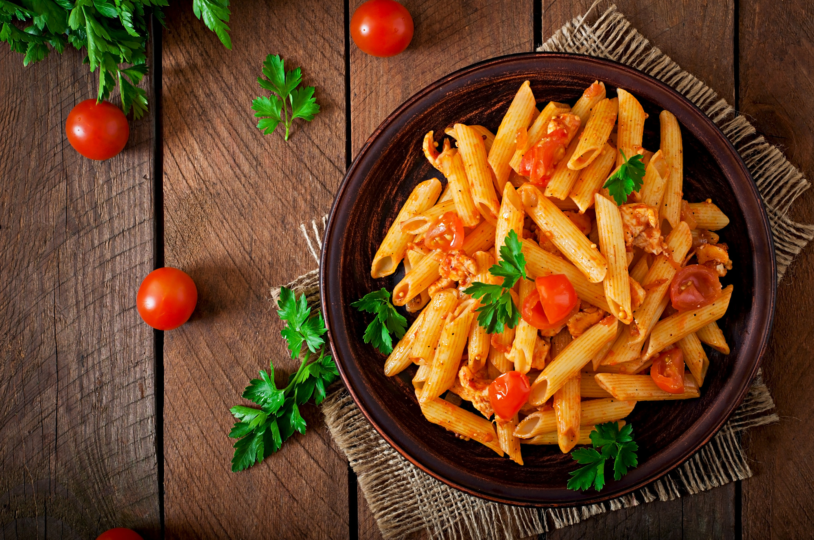

Chicken Pasta

Description
Typically features cooked pasta combined with pieces of chicken and a sauce.
The sauce can vary widely, from creamy Alfredo to tomato-based marinara or pesto,
and often includes other ingredients like vegetables and herbs.
Contents of Dish
- Cooked Pasta (e.g., penne, spaghetti, fettuccine)
- Cooked Chicken (diced, sliced, or shredded)
- Sauce (e.g., Alfredo, marinara, pesto, cream sauce)
- Vegetables (e.g., broccoli, peas, mushrooms, bell peppers)
- Cheese (e.g., Parmesan, mozzarella)
- Herbs (e.g., basil, oregano, parsley)
- Garlic
- Onion
- Spices (e.g., salt, pepper, Italian seasoning)
- Oil or Butter (for cooking)
Chicken Pasta Dish Preparation
- Cook the Pasta: Boil salted water, add pasta, and cook until al dente. Reserve some pasta water, then drain.
- Cook the Chicken: Cut and season chicken. Cook in a skillet until done and browned. Remove and set aside.
- Prepare the Sauce: In the same pan, cook aromatics (garlic, onion). Add sauce ingredients (cream, tomatoes, pesto, etc.) and simmer. Use reserved pasta water to adjust consistency if needed.
- Combine Ingredients: Add cooked pasta and chicken to the sauce. Toss to coat and heat through.
- Add Additional Ingredients (Optional): Stir in vegetables or extra cheese.
- Serve: Serve hot, garnished with fresh herbs and extra cheese if desired.
HomePage